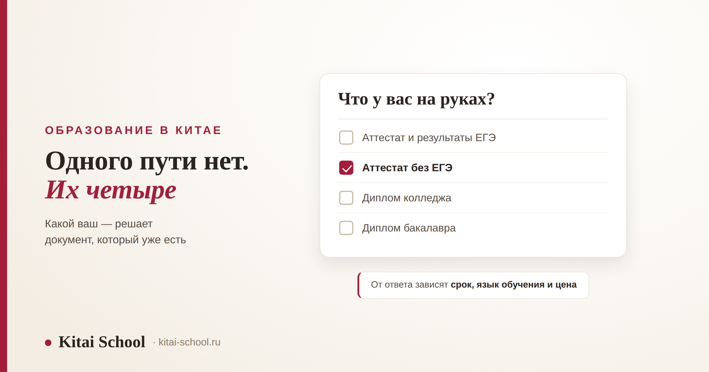
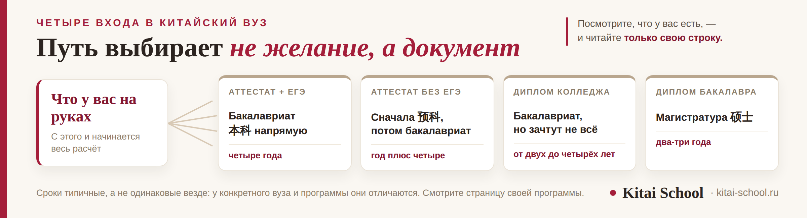

Образование в Китае
Высшее образование в Китае для русских: четыре входа в вуз и что каждый стоит


Высшее образование в Китае для русских доступно, и чаще всего спрашивают, с каких документов начать. Но сначала надо понять, каким путём вы вообще идёте. Путей четыре, и выбираете их не вы: вход зависит от того, что у вас уже на руках — аттестат с ЕГЭ, аттестат без ЕГЭ, диплом колледжа или диплом бакалавра. От входа зависят срок, язык обучения и цена. Разберём все четыре, посмотрим, из чего складывается стоимость, и скажем, что бывает с дипломом потом. Документы, мотивационное письмо и собеседование у нас разобраны отдельно — здесь на них ссылки.
Одного пути нет — их четыре. С ЕГЭ можно поступать на бакалавриат напрямую; без ЕГЭ — через подготовительное отделение; после колледжа поступают отдельно, и диплом засчитывается не всегда; после бакалавриата открыта магистратура. Срок зависит от входа, а не от желания. Точных цен не бывает: смотреть надо страницу своей программы, а закладывать — обучение, жильё, страховку, визу, дорогу и жизнь.
Четыре входа: какой ваш, зависит от того, что на руках
Это первое, что стоит выяснить, — и это занимает пять минут, а не месяц. Посмотрите, какой документ у вас есть, и дальше читайте только свою строку.
| Что у вас на руках | Куда ведёт | Сколько обычно занимает |
|---|---|---|
| Аттестат и результаты ЕГЭ | бакалавриат 本科 напрямую | четыре года |
| Аттестат без ЕГЭ | сначала подготовительное отделение 预科, потом бакалавриат | год плюс четыре |
| Диплом колледжа | бакалавриат, но зачтут не всё | от двух до четырёх лет |
| Диплом бакалавра | магистратура 硕士 | два-три года |
Правый столбец — не обещание, а ориентир. У конкретного вуза и программы сроки отличаются, и смотреть нужно страницу своей программы. Но общая логика видна сразу: чем меньше у вас на руках, тем длиннее путь, и это стоит заложить в план с самого начала.
Про подготовительное отделение стоит сказать отдельно, потому что на нём чаще всего путаются. 预科 — это не языковые курсы. У него есть прописанный переход в программу вуза: отучился, сдал, пошёл на первый курс. У языковых курсов такого перехода нет, они дают язык и сертификат школы. Разница звучит мелко, а стоит года — и мы разобрали её отдельно в статье про языковые курсы в Китае.
И сразу вопрос, который задают вторым. Обязательно ли знать китайский? Не всегда: часть программ идёт на английском, и тогда язык при поступлении не требуют. Но учиться на китайском обычно дешевле, а выбор программ шире. И жить в стране без языка тяжело в любом случае — это стоит учесть заранее, а не в первый месяц. Если программа на китайском, обычно просят сертификат HSK; какой уровень — опять же смотрите в требованиях своей программы.
И совет, который экономит больше всего времени. Не ищите ответы в сводных статьях — откройте страницу своей программы на сайте вуза. Там есть ровно три вещи, которые вам нужны на этом этапе: кого берут, какие документы просят и сколько стоит год. Пять таких страниц дают более точную картину, чем месяц чтения форумов, — и почти всегда оказывается, что разброс больше, чем вы думали.

Из чего складывается цена
Точных сумм здесь не будет, и это осознанно. Стоимость зависит от вуза, города, ступени и года, а цифры из чужих статей устаревают быстрее, чем их успевают прочитать. Полезнее держать в голове структуру: тогда ни одна строка не станет сюрпризом.
| Статья расходов | Что учесть |
|---|---|
| Обучение | зависит от вуза, города и ступени. Смотрите страницу своей программы, а не сводные таблицы |
| Жильё | общежитие обычно дешевле съёмного, но мест не всегда хватает |
| Медицинская страховка | для учебной визы обязательна, оформляется по правилам принимающей стороны |
| Виза и оформление | консульский сбор, подача, а для длинных программ — ещё и вид на жительство уже на месте |
| Приезд и первые недели | перелёт, медосмотр, регистрация, банковская карта, симкарта |
| Жизнь | еда, транспорт, быт — по ним есть отдельный разбор |
Забывают обычно три последние строки. Про обучение и общежитие помнят все, а виза, перелёт и первый месяц жизни в плане не появляются — и именно они создают ощущение, что «всё оказалось дороже». Сколько стоят еда и транспорт, разобрано в статье о том, дорого ли в Китае.
Ко мне пришла семья: дочь заканчивала одиннадцатый класс, ЕГЭ сдавать не планировала, и родители были уверены, что дорога в китайский вуз закрыта.
Мы посмотрели, что у них на руках, и оказалось, что путь есть — через подготовительное отделение. Он длиннее на год, и это надо было принять. Но их напугало другое: они успели посчитать бюджет по цифрам из чужой статьи, и сумма выходила неподъёмной.
Мы открыли страницы трёх конкретных программ. Две оказались заметно дешевле того, на что они рассчитывали. Через год девочка поступила на 预科. Ничего волшебного не произошло — просто они смотрели не туда, куда надо было смотреть.
Про гранты и слово «бесплатно» — коротко, потому что об этом у нас написано подробно. «Бесплатно» бывает разной степени: грант может покрывать обучение целиком, обучение и общежитие или ещё и ежемесячную выплату. Есть и расходы, которые не вернут при любом раскладе, — те, что вы потратили до подачи. Какие бывают гранты и как они распределяются — в разборе про гранты на обучение в Китае; что именно покрывает стипендия и где остаются свои деньги — в статье про бесплатное образование в Китае.
Что будет после диплома
Об этом думают в последнюю очередь, а решать лучше заранее: от ответа зависит, на какую программу и на каком языке идти.
Первый вариант — остаться работать в Китае. Для этого нужна рабочая виза, и выпускнику местного вуза её оформить проще, чем человеку, который приезжает со стороны: у вас уже есть диплом китайского образца и язык. Как устроен этот путь и что требуется от работодателя — в разборе про работу в Китае для иностранца.
Второй — вернуться. Тогда диплом проходит отдельную процедуру признания. Она занимает время, и начинать её разумно заранее, а не в тот момент, когда диплом срочно понадобился для работы или для поступления дальше.
И то, о чём стоит сказать прямо. Ни один из двух вариантов не решается дипломом сам по себе. Остаться работать помогает язык, а не корочка: на собеседовании вас будут слушать, а не читать. Поэтому китайский стоит подтягивать всё время учёбы, а не считать, что среда сделает это за вас. Как это устроено у нас, описано в разборе курсы китайского для взрослых.
Что мы здесь не пересказываем
Про учёбу в Китае у нас десять отдельных статей. Эта — карта, по которой видно, какую из них открывать.
| Ваш вопрос | Где разобрано |
|---|---|
| Вход после школы: 本科 и 预科 | бакалавриат в Китае |
| Вход без ЕГЭ | поступление в Китай без ЕГЭ |
| Вход после колледжа | поступление в Китай после колледжа и есть ли в Китае колледжи |
| Вход после бакалавриата | магистратура в Китае |
| Документы: что заказывать первым | гранты на обучение в Китае |
| Мотивационное письмо и собеседование | стипендия CSC в Китае |
| Когда что подавать | как поступить в Китай на бюджет |
| Что покрывает стипендия и где нужны свои деньги | бесплатное образование в Китае |
И главное, ради чего всё это собиралось. Начинать надо не с документов, а с вопроса «что у меня на руках». Ответ на него сразу отсекает три пути из четырёх и говорит, сколько лет займёт дорога. Людей чаще всего останавливает не отказ вуза, а ощущение, что всё непонятно и очень дорого, — и держится оно ровно до того момента, когда открываешь страницу конкретной программы.
Частые вопросы (FAQ)
Можно ли русскому получить высшее образование в Китае?
Да, и путей несколько. Какой ваш — зависит не от желания, а от того, что у вас уже на руках. С аттестатом и результатами ЕГЭ можно поступать на бакалавриат напрямую. Без ЕГЭ путь идёт через подготовительное отделение. После колледжа поступают отдельно, и диплом засчитывается не всегда. После бакалавриата открыта магистратура. У каждого входа свой срок.
Сколько стоит обучение в Китае для русских?
Точную сумму назвать нельзя, и цифрам из интернета верить не стоит: они зависят от вуза, города, ступени и года, а устаревают быстро. Смотреть надо страницу своей программы. Но структура расходов везде одинаковая: обучение, жильё, страховка, виза и оформление, дорога и жизнь. Забывают обычно про три последние строки.
Нужно ли знать китайский, чтобы поступить?
Не всегда. Часть программ идёт на английском, и тогда китайский при поступлении не требуется. Но учиться на китайском дешевле и вариантов больше, а жить в стране без языка тяжело в любом случае. Если программа на китайском, обычно просят сертификат HSK — какой именно уровень, смотрите в требованиях своей программы.
Чем подготовительное отделение отличается от языковых курсов?
Одним, но решающим: у подготовительного отделения 预科 есть прописанный переход в программу вуза, а у языковых курсов его нет. Курсы дают язык и сертификат школы, и это нормально, если знать заранее. Путаница между ними стоит года, и разбирали мы её отдельно.
Засчитают ли диплом российского колледжа?
Не всегда и не полностью. Это зависит от вуза, от направления и от того, как соотносятся программы. Иногда засчитывают часть курсов, иногда просят поступать с начала. Проверять надо в конкретном вузе до подачи, а не после — у нас есть отдельный разбор этого пути.
Что делать с китайским дипломом после выпуска?
Два обычных варианта. Остаться работать в Китае — для этого нужна рабочая виза, и выпускникам местных вузов её получить проще, чем приезжающим со стороны. Или вернуться — тогда диплом проходит отдельную процедуру признания, и начинать её лучше заранее, а не в момент, когда он срочно понадобился.
Хотите разобраться, какой вход ваш? На диагностическом занятии посмотрим ваш уровень китайского и прикинем, что реально успеть к подаче. Оставить заявку или написать в Telegram.
Дальше по теме: вход после школы — бакалавриат в Китае; без ЕГЭ — поступление в Китай без ЕГЭ; после колледжа — поступление в Китай после колледжа и есть ли в Китае колледжи; после бакалавриата — магистратура в Китае; документы и подача — гранты на обучение в Китае; мотивационное письмо и интервью — стипендия CSC в Китае; календарь — как поступить в Китай на бюджет; что покрывает стипендия — бесплатное образование в Китае; языковой год — языковые курсы в Китае; цены на жизнь — дорого ли в Китае; работа после диплома — работа в Китае для иностранца; экзамен — сертификат HSK; занятия языком — курсы китайского для взрослых.
Источники
- Практика Kitai School — подготовка к поступлению и сопровождение тех, кто уехал учиться в Китай.
- Наблюдения за тем, на каком этапе люди отказываются от идеи и что этому предшествует.
- Типичная картина, а не строгое правило: требования и сроки различаются у вузов, программ и по годам. Проверять нужно на странице своей программы.
Пусть учится легко! 前程似锦！